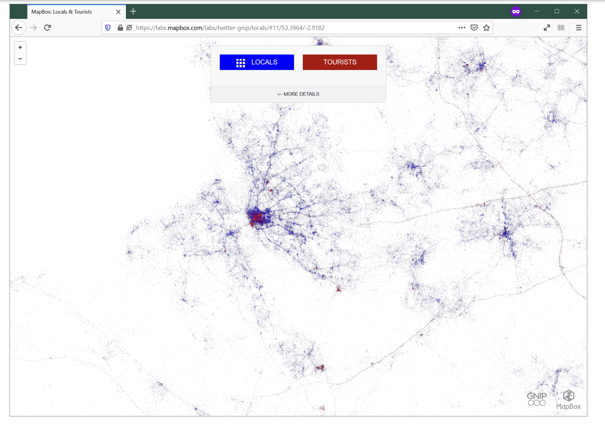
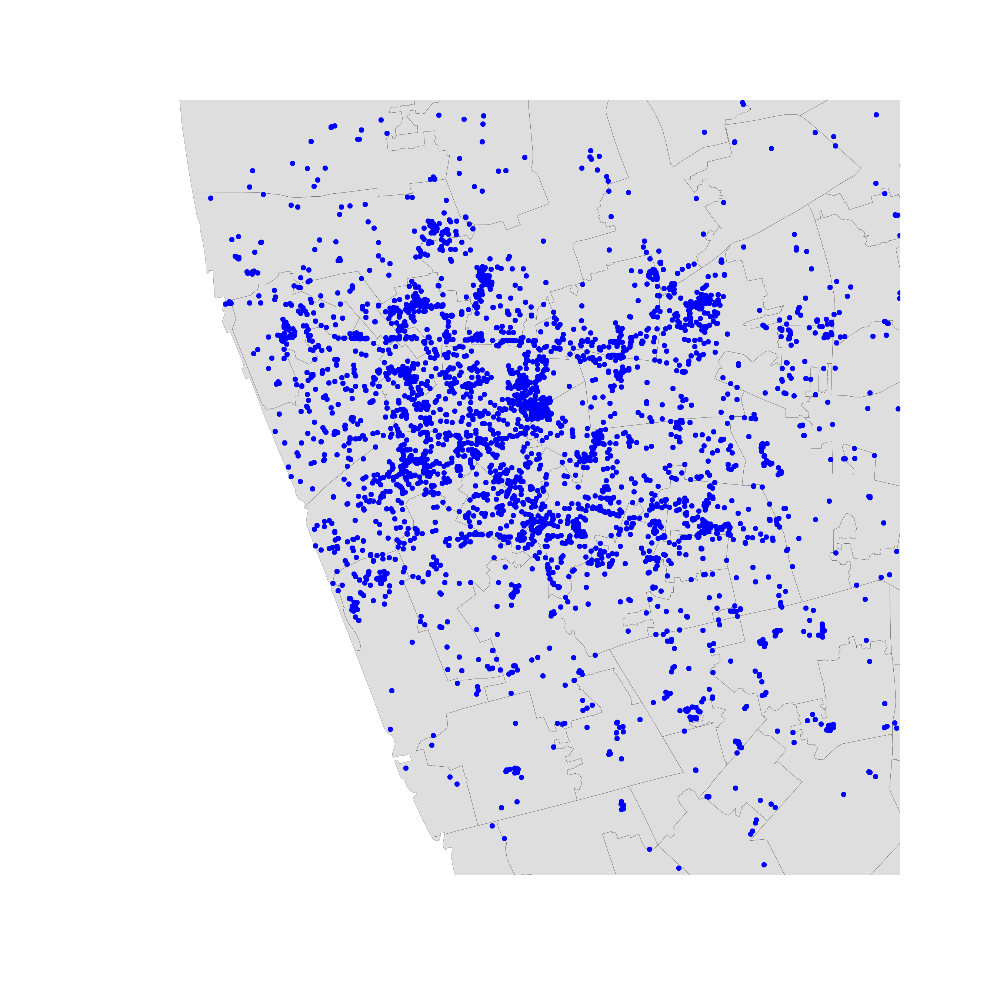
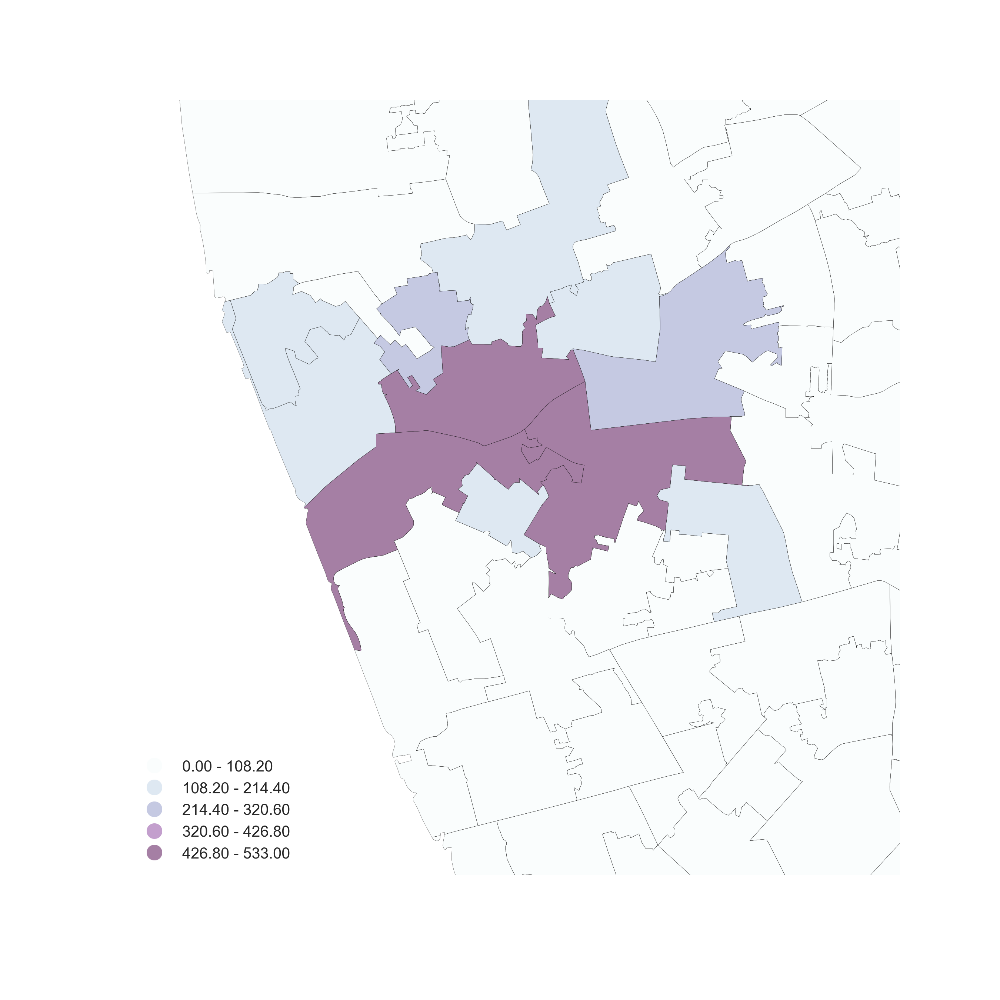
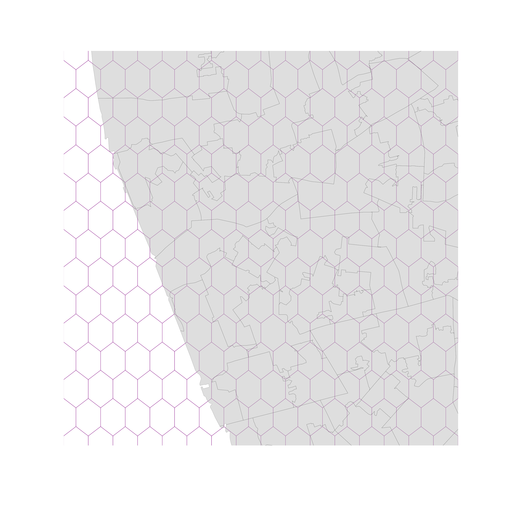
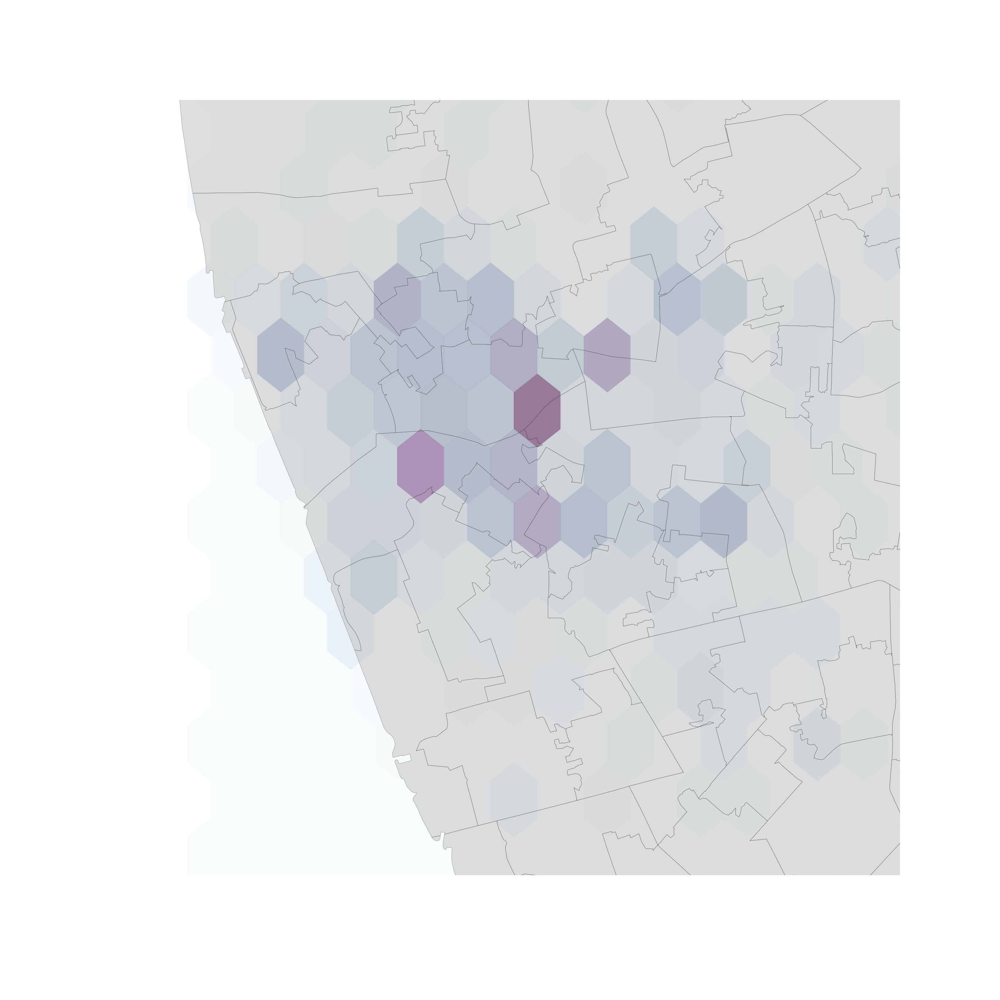
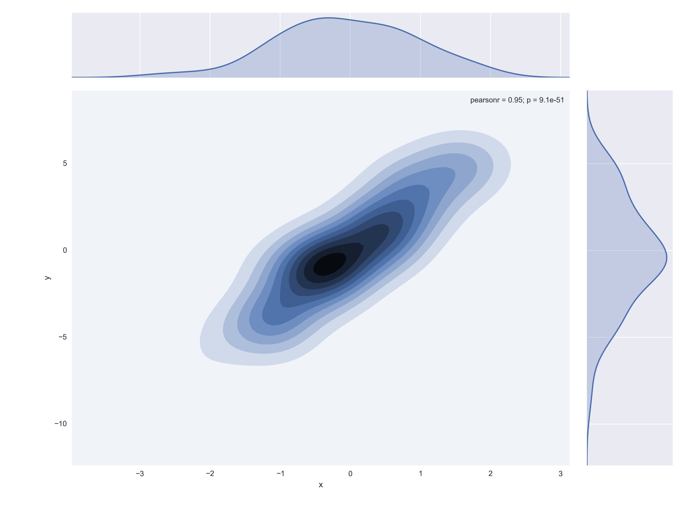
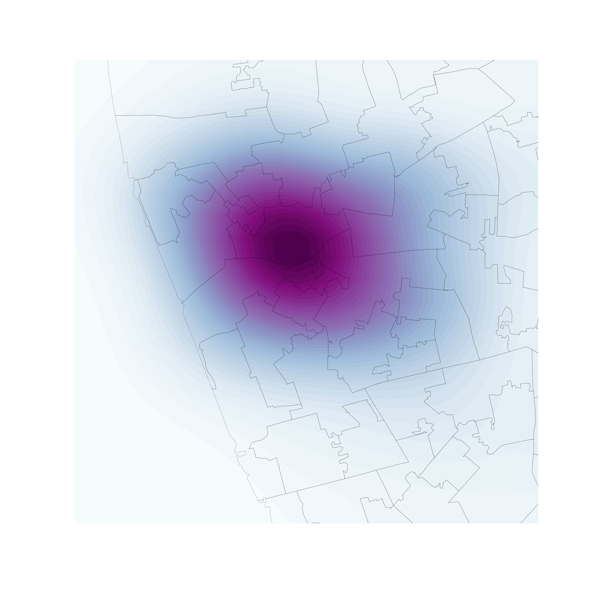
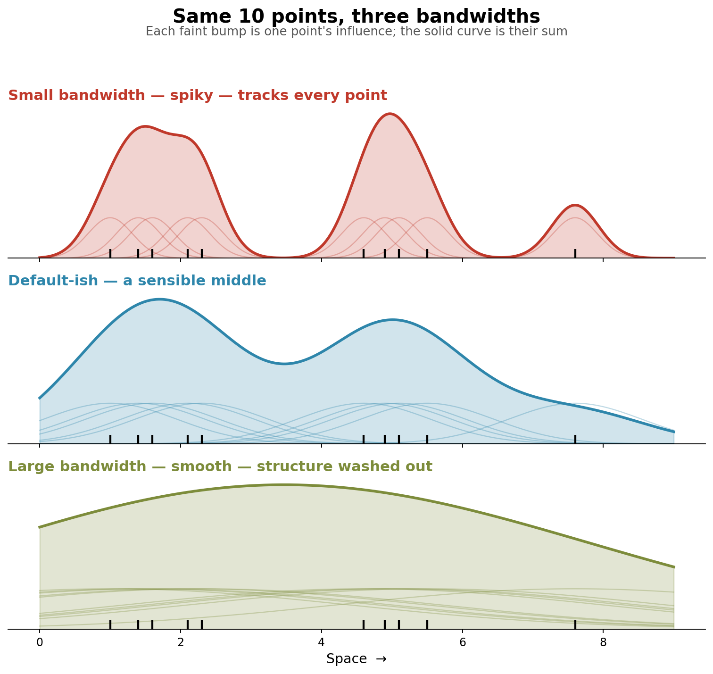
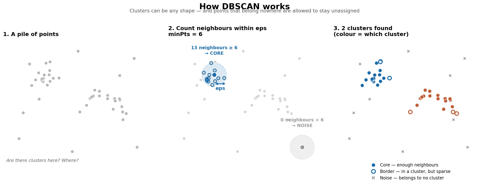

Geographic Data Science
Point Patterns
The point of points
Points like polygons
- Points can represent “fixed” entities
- In this case, points are qualitatively similar to polygons/lines
- The goal here is, taking location fixed, to model other aspects of the data
Points like polygons
Examples: - Cities (in most cases) - Buildings - Polygons represented as their centroid - …
When points are not polygons
Point data are not only a different geometry than polygons or lines…
… Points can also represent a fundamentally different way to approach spatial analysis
Points unlike polygons
A few examples



Point patterns
Point patterns
Distribution of points over a portion of space Assumption is a point can happen anywhere on that space, but only happens in specific locations
- Unmarked: locations only
- Marked: values attached to each point
Point Pattern Analysis
Describe, characterize, and explain point patterns, focusing on their generating process
- Visual exploration
- Clustering properties and clusters
- Statistical modeling of the underlying processes
Visualization of Point Patterns
Visualization of PPs
Three routes (today):
- One-to-one mapping – “Scatter plot”
- Aggregate – “Histogram”
- Smooth – KDE
You will use all three in the lab, in this order.
One-to-one
- Intuitive
- Effective in small datasets
- Limited as size increases until useless
One-to-one

Aggregation
Points meet polygons
- Use polygon boundaries and count points per area [Insert your skills for choropleth mapping here!!!]
- But, the polygons need to “make sense” (their delineation needs to relate to the point generating process)

Hex-binning
If no polygon boundary seems like a good candidate for aggregation… …draw a hexagonal (or squared) tesselation!!!
Hexagons…
- Are regular
- Exhaust the space (Unlike circles)
- Have many sides (minimize boundary problems)


But
- (Arbitrary) aggregation may induce MAUP
- Points usually represent events that affect only part of the population and hence are best considered as rates
Kernel Density Estimation (KDE)
KDE
Estimate the (continuous) observed distribution of a variable
- Probability of finding an observation at a given point
- “Continuous histogram”
- Solves (much of) the MAUP problem, but not the underlying population issue
Bivariate (spatial) KDE
Probability of finding observations at a given point in space
- Bivariate version: distribution of pairs of values
- In space: values are coordinates (XY), locations
- Continuous “version” of a choropleth


Bandwidth: the one knob that matters
How far does each point’s influence spread?
- Small bandwidth → spiky surface, tracks individual points
Lots of detail, lots of noise - Large bandwidth → smooth blob
Clean, but real local structure washed out
There is no single correct value. It’s a judgement call about what scale of pattern you want to show.

Bandwidth in the lab
You’ll map the same data at three bandwidths and decide which one you’d actually publish
| R | Python | |
|---|---|---|
| Default | (no argument) | (no argument) |
| Spikier | adjust = 0.5 |
bw_adjust = 0.5 |
| Smoother | adjust = 2 |
bw_adjust = 2 |
Density-Based Spatial Clustering of Applications with Noise, or DBSCAN
What DBSCAN does
Finds concentrations of points — areas denser than the space around them
Unlike the clustering you met earlier in the course, DBSCAN:
- Finds clusters of arbitrary shape (not just blobs)
- Explicitly labels some points as noise — not everything has to belong somewhere
Three kinds of point
Every point ends up in one of three categories:
- Core — has at least
mpoints within distancerof it - Border — inside a cluster, but with fewer than
mneighbours - Noise — outside any cluster
That third category is the “N” in DBSCAN, and it’s what makes the algorithm robust to outliers.
Two parameters, set by you
eps(r) — the search radius. How close is close?minPts/min_samples(m) — how many neighbours are needed. How dense is dense?
⚠️ Both must be chosen before running the algorithm, and both change the answer substantially.

eps is a real distance
This means your data must be projected before you run DBSCAN.
- Lon/lat degrees are not a distance — 1° means something different at the equator than in Buenos Aires
- In the lab we reproject to EPSG:22176 (metres, Argentina) first
- Then
eps = 100genuinely means 100 metres
Parameters change everything
In the lab you’ll run the same data twice:
| Run 1 | Run 2 | |
|---|---|---|
eps |
100 m | 250 m |
| min points | 50 | 10 |
Same data, same algorithm, very different maps. Compare them and ask which one you’d trust.
Choosing eps less arbitrarily
For every point, measure the distance to its kth nearest neighbour, sort those distances, and plot them
- Look for the “knee” — where the curve bends sharply upward
- Below the knee: points close enough to plausibly cluster
- Above it: points that look more like noise
- That knee is a defensible choice of
eps
Two advantages worth knowing
1. It is not necessarily spatial. Designed for data mining, not geography. Works in 2 dimensions (XY) or many more (price, product type…).
2. Fast and scalable. Runs on large datasets without trouble — unlike traditional point pattern methods that lean on simulation. You can iterate quickly.
Two drawbacks worth knowing
1. No probabilistic model. Unlike LISAs, there’s no null hypothesis, no inference, no statistical significance. You can’t tell whether a “cluster” could have arisen at random.
2. Agnostic about process. It tells you where the clusters are, not why they’re there.
Going further
Plain DBSCAN uses one fixed radius everywhere — a problem when some parts of your map are inherently denser than others.
Both labs end with a more robust variant:
- R →
hdbscan()— works out an appropriate radius per region - Python →
ADBSCAN()— runs DBSCAN many times and lets the runs vote
Different algorithms, same motivation: handle clusters of varying density.
In the lab
Buenos Aires Airbnb listings, start to finish:
- One-to-one — plot every listing
- Aggregate — count by neighbourhood, then hex-bin
- Smooth — KDE, and vary the bandwidth
- Cluster — DBSCAN at two parameter settings, then a robust variant
R and Python, side by side
| Task | R | Python |
|---|---|---|
| Pull out coordinates | st_coordinates() |
.geometry.x / .geometry.y |
| KDE | geom_density_2d_filled() |
sns.kdeplot(fill=True) |
| Adjust bandwidth | adjust = |
bw_adjust = |
| Clustering | dbscan::dbscan() |
DBSCAN() |
Find optimal eps |
kNNdistplot() |
NearestNeighbors() |
| Robust variant | hdbscan() |
ADBSCAN() |
One last thing
Every map you make in the lab is a working map, not a finished one.
Raw legend labels, no scale bar, no north arrow, debugging titles…
Questions

Geographic Data Science by Elisabetta Pietrostefani is licensed under a Creative Commons Attribution-ShareAlike 4.0 International License.